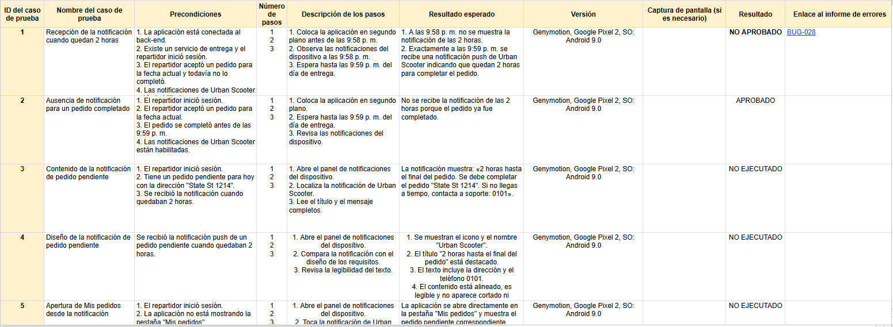
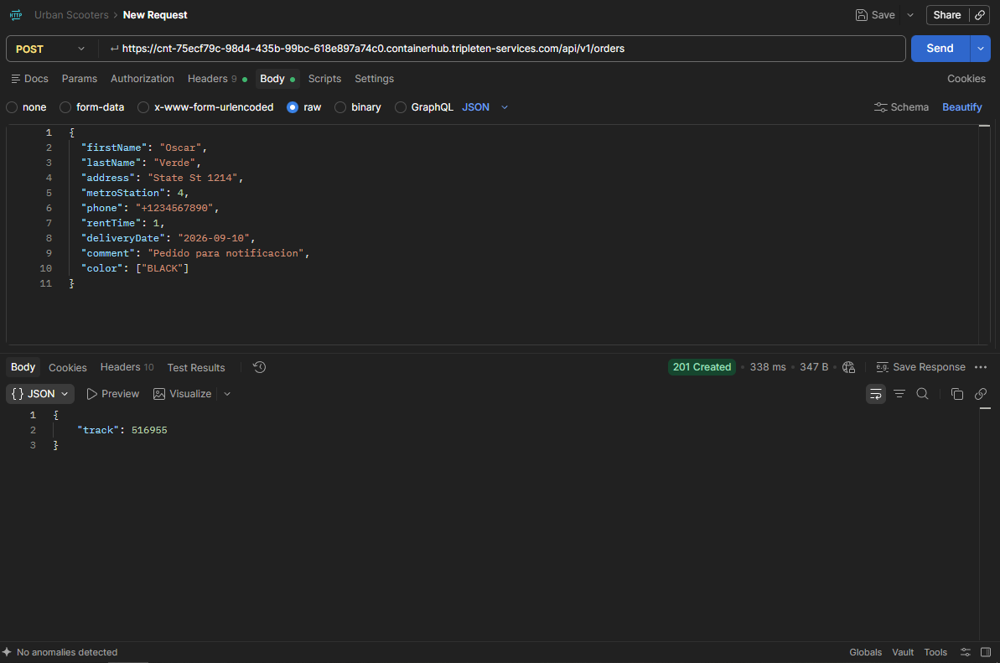
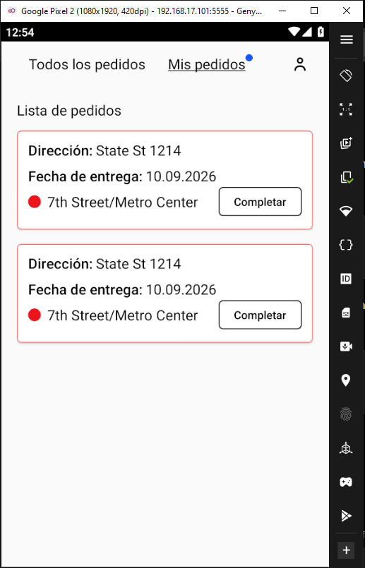
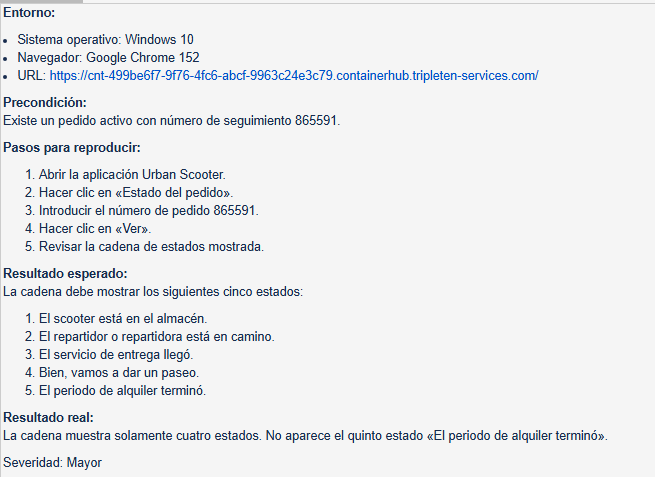
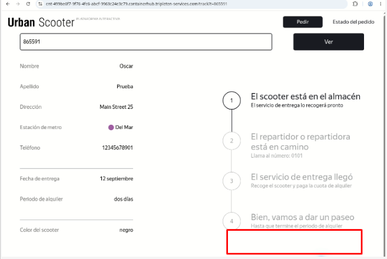
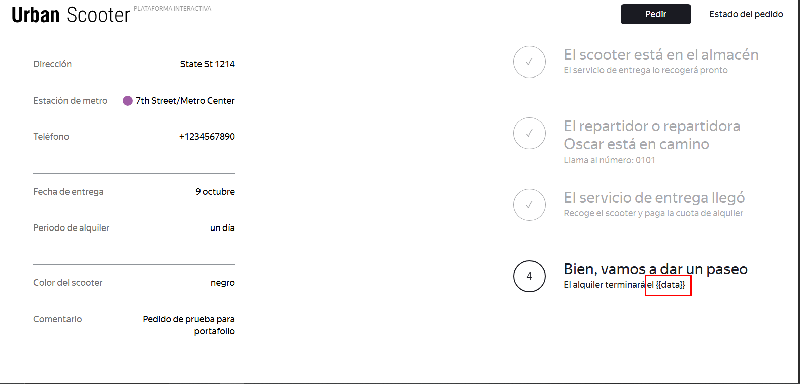
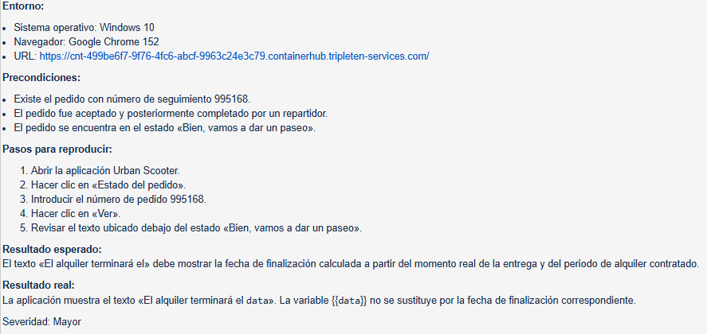
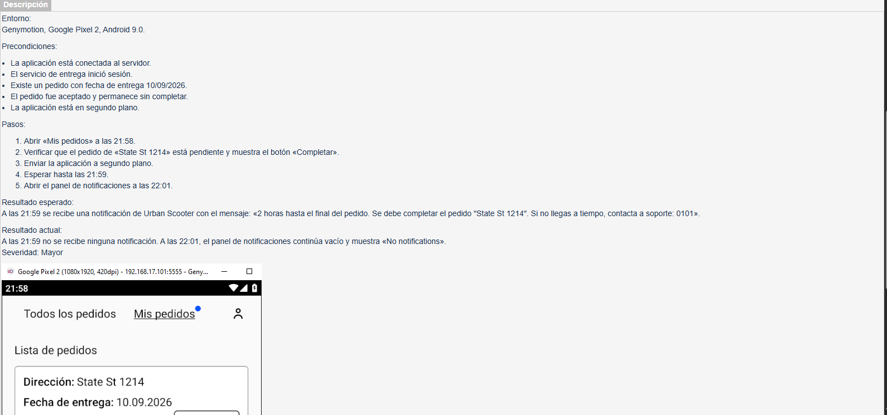
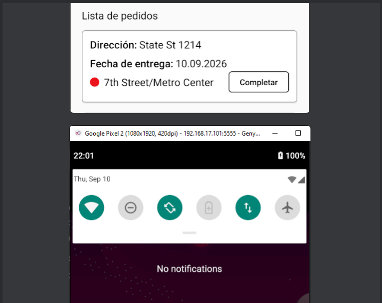
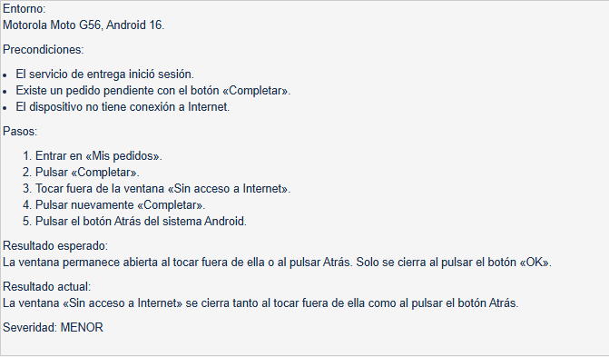

NOTIFICACIONES · US-26
No se recibe la notificación esperada
La notificación prevista para cuando faltaban dos horas para finalizar el pedido no se recibió durante la ejecución del caso de prueba.
CASO DE ESTUDIO · QA
Pruebas Web, API y Mobile
Validación del flujo de creación y procesamiento de pedidos mediante análisis de requisitos, diseño de pruebas, ejecución manual, pruebas de API y documentación de defectos.
01 · CONTEXTO
Urban Scooters es un proyecto de QA enfocado en un sistema de renta y gestión de scooters. El trabajo incluyó componentes web, servicios API y una aplicación móvil relacionada con el procesamiento de pedidos.
El objetivo fue comprobar que el flujo de pedido funcionara de acuerdo con los requisitos, desde la introducción de datos y la creación de la orden hasta su gestión posterior en la aplicación.
02 · CONTRIBUCIÓN
Analicé requisitos, diseñé y ejecuté pruebas, preparé datos mediante API y documenté los defectos encontrados con sus resultados esperados, resultados obtenidos y evidencias.
Listas de comprobación, casos de prueba, validaciones positivas y negativas.
Uso de solicitudes HTTP para crear pedidos y preparar datos necesarios para las pruebas.
Ejecución de pruebas en entorno móvil y emulado para validar estados, notificaciones y comportamiento de la interfaz.
Registro de incidencias en Jira con pasos, esperado, obtenido, severidad y evidencia.
03 · PROCESO Y DECISIONES
Revisé los requisitos para identificar los flujos principales, validaciones, estados del pedido y condiciones que debían comprobarse.
Organicé las comprobaciones por funcionalidad y utilicé escenarios positivos, negativos, clases de equivalencia y valores límite cuando correspondía.
Utilicé solicitudes de API para crear pedidos y obtener los datos necesarios antes de validar su comportamiento en otros componentes del sistema.
Cuando aparecía un comportamiento inesperado, repetía el escenario y modificaba las condiciones de prueba para determinar si el problema era reproducible.
Registré los defectos de forma estructurada y relacioné cada hallazgo con el comportamiento esperado definido en los requisitos.
04 · HALLAZGOS
Durante la ejecución encontré defectos funcionales, visuales y de comportamiento que pude reproducir y documentar con evidencia.
NOTIFICACIONES · US-26
La notificación prevista para cuando faltaban dos horas para finalizar el pedido no se recibió durante la ejecución del caso de prueba.
MOBILE · US-29
Tras aceptar un único pedido, la aplicación móvil mostraba más de una tarjeta correspondiente al mismo pedido.
ESTADO DEL PEDIDO · US-4
La pantalla de estado mostraba cuatro etapas cuando el requisito especificaba una cadena de cinco estados.
WEB · US-7
Durante el estado de paseo se mostraba {{data}} en lugar de la fecha
calculada de finalización del alquiler.
05 · RESULTADO Y APRENDIZAJE
Este proyecto me permitió trabajar un flujo de QA de principio a fin: interpretar requisitos, diseñar cobertura, preparar datos, ejecutar pruebas en distintos componentes y convertir comportamientos inesperados en reportes de defectos claros y reproducibles.
También reforcé la importancia de no asumir que un fallo pertenece a una sola capa del sistema. Al combinar pruebas web, API y mobile pude comparar comportamientos y reunir mejores evidencias antes de reportar una incidencia.
06 · EVIDENCIAS
Seleccioné evidencias que permiten revisar el diseño de pruebas, el trabajo con API y algunos de los defectos encontrados. Haz clic en cualquier imagen para verla en tamaño completo.






{{data}} en lugar de la fecha calculada.



